Algorithms
ooacquire 0.1.4.9003
Pedro J. Aphalo
2017-09-29
Introdcution
In this vignette we will walk through the different steps used in the conversion of raw counts into physical quantites. Different protocols can be used, and not all those implemented are exemplified. The facilities in the package also allow users to implement their own measurement and correction protocols. It must be, however, always kept in mind that protocols and calibrations go hand in han: For each different protocol new calibration data will be required. In many cases new calibration and validation measurements will be needed, but sometimes just recalculation of new calibration constants from existing raw-counts and calibration-lamp data may be enough.
Code examples
All examples in vignettes use data and files included in the package. Data files in formats foreign to R, are stored in the "extdata" folder, as is the norm for R packages.
To reproduce any of the examples which use files as data input, it is best to make a local copy of the whole "extdata" folder. The files used in examples are organized into subfolders, but all example code assumes that its in being run with "extdata" or a copy of it as the current working folder.
folderpath <- system.file("extdata",package="ooacquire")
## file.copy(from = folderpath, to = ".", recursive = TRUE)Irradiance
We will step through the different steps of the algorithm used, plotting the spectra at each step along the way. We use raw counts data, included in the package, to make building this vignette easier. At the same time we show how raw data acquire outwith R can be also processed with the package.
Interactive acquisition of spectral irradiance
We first load the R packages to be used.
library(ggplot2)
library(ggspectra)
library(photobiology)
library(photobiologyWavebands)
library(ooacquire)
library(magrittr)Household white LED bulb
We will read data from the measurement of the irradiance under a white LED light source—Osram LED Star classic A 60 E27. It was measured with a Ocean Optics, Maya 2000 Pro spectrometer, using the function acquire_irrad_interactive().
We calculate irradiance from a set of raw-counts spectral data using a high-level function.
LED_lamp_recalc.spct <-
s_irrad_corrected(white_LED_2min.raw_mspct,
correction.method= ooacquire::MAYP11278_ylianttila.mthd)## Warning in range_check(x, cps.cols): Off-range cps values [-50.77..0.00]
## instead of [0..1]## Warning in range_check(x, cps.cols): Off-range cps values [-54.81..0.00]
## instead of [0..1]plot(LED_lamp_recalc.spct)plot(LED_lamp_recalc.spct, range = c(250, 410))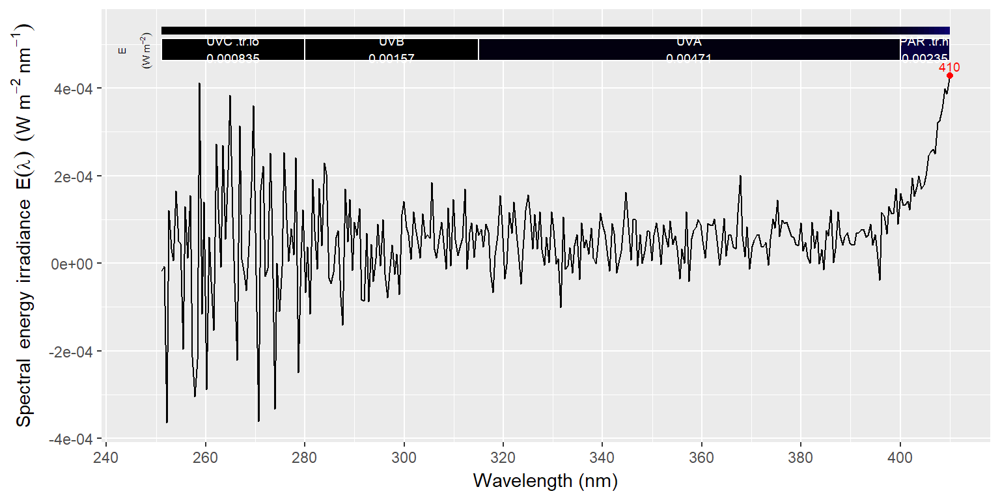
We next print the collection of spectra containing raw counts data. The protocol used consisted in one light measurement and one dark measurement, each with bracketing of the integration time.
white_LED.raw_mspct## Object: raw_mspct [3 x 1]
## --- Member: light ---
## Object: raw_spct [2,068 x 3]
## Wavelength range 187.82 to 1117.14 nm, step 0.41 to 0.48 nm
## what label: light
## user.label label: osram06
## Measured on 2016-12-01 10:08:16 UTC
## Data acquired with 'MayaPro2000' s.n. MAYP11278
## grating 'HC1', slit '010s'
## integ. time (s): 0.32, 3.2
## total time (s): 5.11, 6.39
## counts @ peak (% of max): 94.3
##
## # A tibble: 2,068 x 3
## w.length counts_1 counts_2
## <dbl> <dbl> <dbl>
## 1 187.82 2302.500 2303.0
## 2 188.30 2220.688 2219.5
## 3 188.78 2190.250 2188.0
## 4 189.26 2192.938 2191.5
## 5 189.73 2593.625 6033.5
## 6 190.21 2629.500 6421.0
## 7 190.69 2645.625 6624.5
## 8 191.17 2658.125 6647.0
## 9 191.64 2690.375 6990.5
## 10 192.12 2658.312 6684.5
## # ... with 2,058 more rows
## --- Member: filter ---
## Object: raw_spct [2,068 x 3]
## Wavelength range 187.82 to 1117.14 nm, step 0.41 to 0.48 nm
## what label: filter
## user.label label: osram06
## Measured on 2016-12-01 10:08:16 UTC
## Data acquired with 'MayaPro2000' s.n. MAYP11278
## grating 'HC1', slit '010s'
## integ. time (s): 0.32, 3.2
## total time (s): 5.11, 6.39
## counts @ peak (% of max): 94.3
##
## # A tibble: 2,068 x 3
## w.length counts_1 counts_2
## <dbl> <dbl> <dbl>
## 1 187.82 2299.500 2302.5
## 2 188.30 2219.312 2222.0
## 3 188.78 2189.125 2193.5
## 4 189.26 2189.875 2193.5
## 5 189.73 2595.438 5988.0
## 6 190.21 2624.000 6393.0
## 7 190.69 2635.000 6456.0
## 8 191.17 2634.000 6499.5
## 9 191.64 2668.438 6701.0
## 10 192.12 2635.375 6479.0
## # ... with 2,058 more rows
## --- Member: dark ---
## Object: raw_spct [2,068 x 3]
## Wavelength range 187.82 to 1117.14 nm, step 0.41 to 0.48 nm
## what label: dark
## user.label label: osram06
## Measured on 2016-12-01 10:08:16 UTC
## Data acquired with 'MayaPro2000' s.n. MAYP11278
## grating 'HC1', slit '010s'
## integ. time (s): 0.32, 3.2
## total time (s): 5.11, 6.39
## counts @ peak (% of max): 94.3
##
## # A tibble: 2,068 x 3
## w.length counts_1 counts_2
## <dbl> <dbl> <dbl>
## 1 187.82 2301.062 2303.0
## 2 188.30 2218.625 2224.0
## 3 188.78 2190.000 2192.0
## 4 189.26 2192.188 2192.5
## 5 189.73 2589.750 6002.0
## 6 190.21 2624.500 6405.5
## 7 190.69 2634.500 6436.5
## 8 191.17 2634.250 6540.5
## 9 191.64 2663.062 6757.5
## 10 192.12 2637.812 6547.5
## # ... with 2,058 more rows
##
## --- END ---Ploting the three bracketed spectra shows the raw data. The detector saturates at approximately 64000 counts.
plot(white_LED_2min.raw_mspct[["light"]])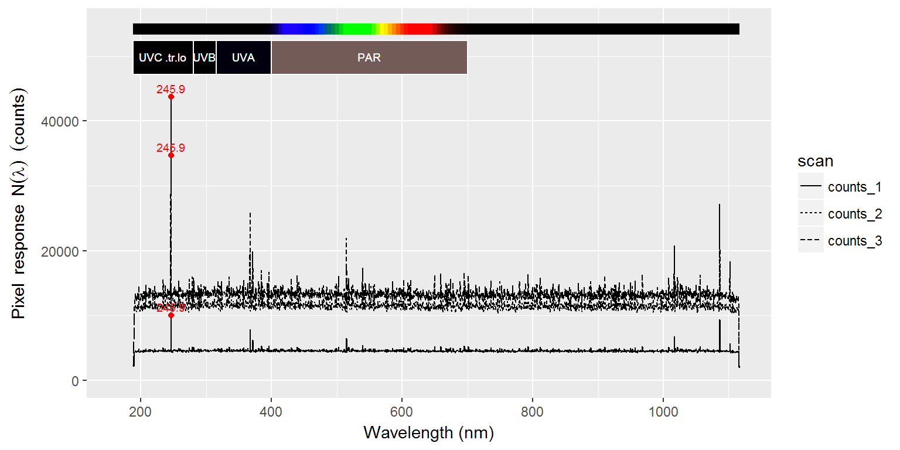
plot(white_LED_2min.raw_mspct[["dark"]])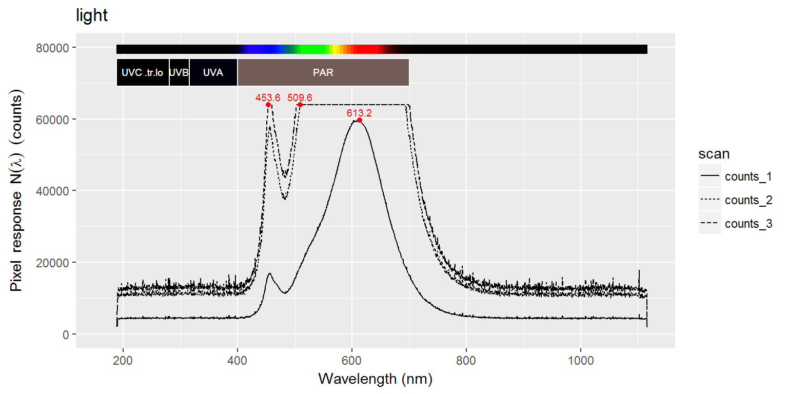
The first step in the processing is removal of bad pixels, as recorded in the calibration data.
for (m in names(white_LED_2min.raw_mspct)) {
white_LED_2min.raw_mspct[[m]] <-
skip_bad_pixs(white_LED_2min.raw_mspct[[m]])
print(plot(white_LED_2min.raw_mspct[[m]]) + ggtitle(m))
}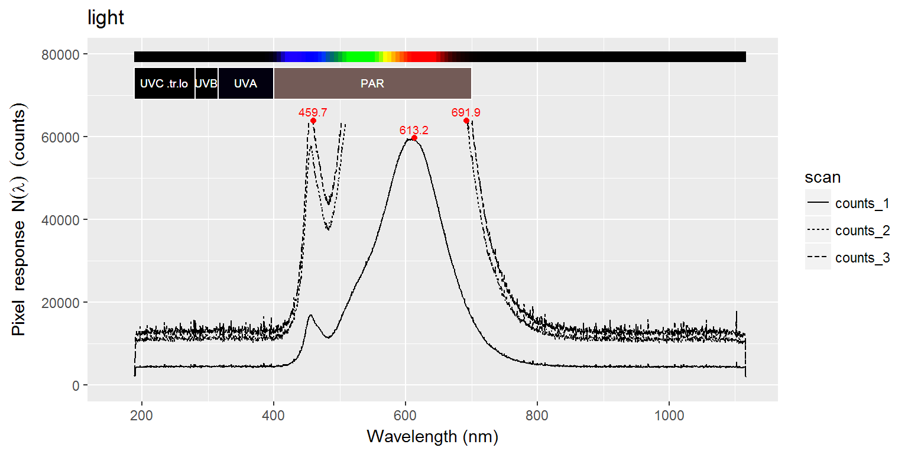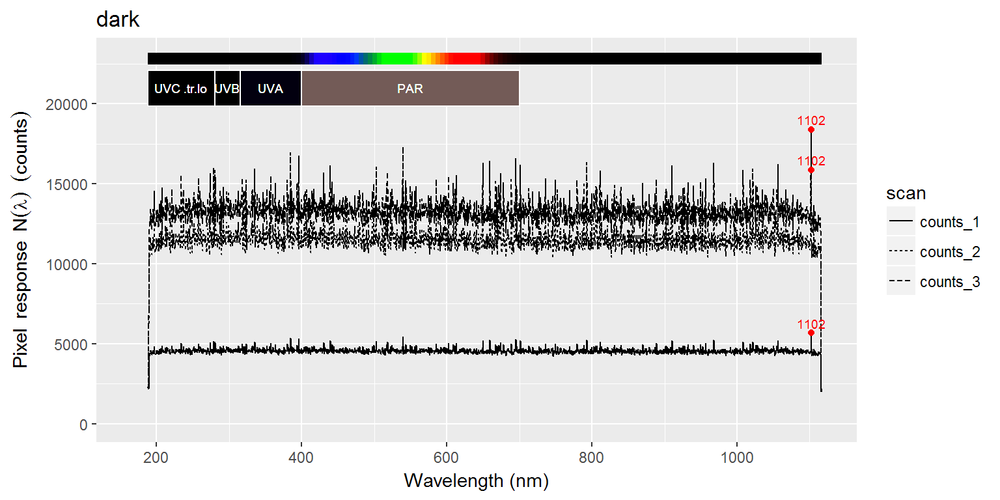
Next step is to replace saturated pixel data, with the missing data marked NA.
for (m in names(white_LED_2min.raw_mspct)) {
white_LED_2min.raw_mspct[[m]] <-
trim_counts(white_LED_2min.raw_mspct[[m]])
print(plot(white_LED_2min.raw_mspct[[m]]) + ggtitle(m))
}## Warning: Removed 844 rows containing non-finite values (stat_peaks).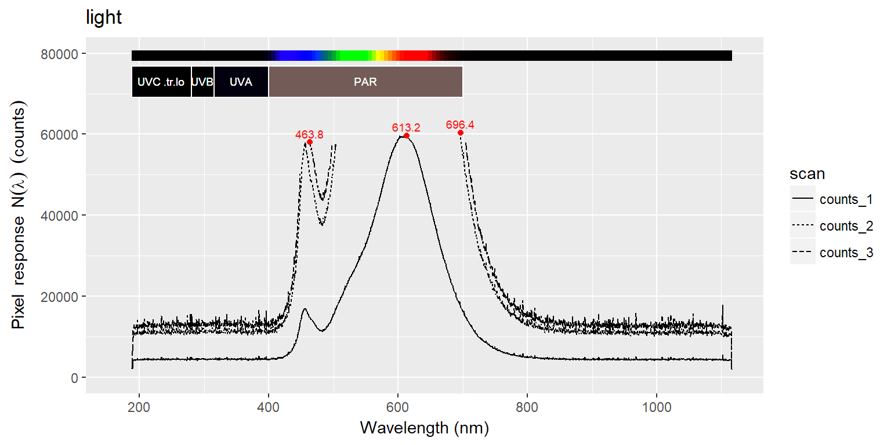
Saturated pixels can affect the readings from nearby pixels through charge migration, so we need to also tag as NAs these additional pixels.
for (m in names(white_LED_2min.raw_mspct)) {
white_LED_2min.raw_mspct[[m]] <-
bleed_nas(white_LED_2min.raw_mspct[[m]])
print(plot(white_LED_2min.raw_mspct[[m]]) + ggtitle(m))
}## Warning: Removed 904 rows containing non-finite values (stat_peaks).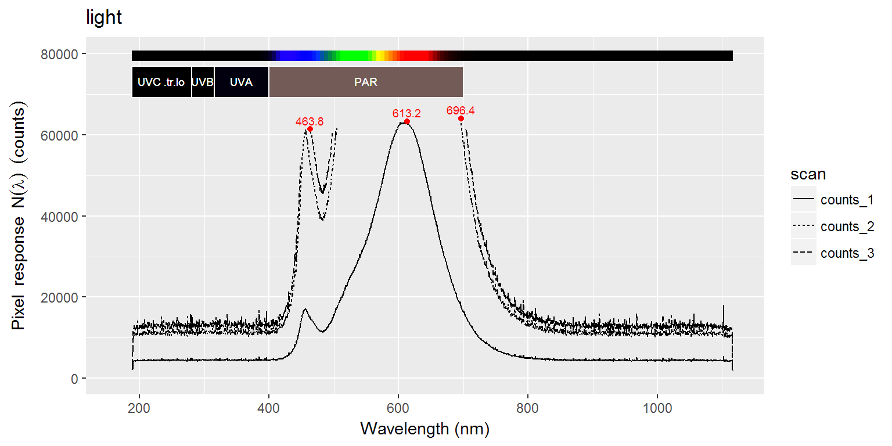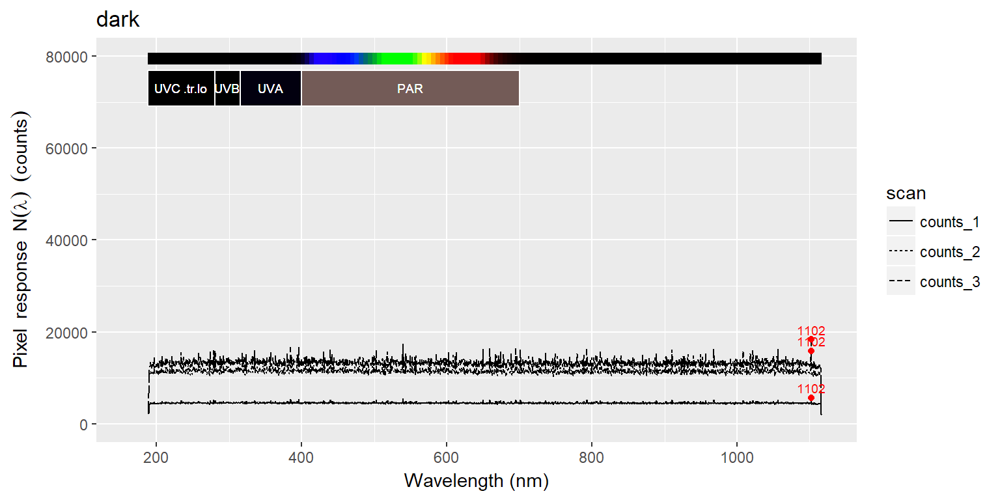
Next we need to apply a linearization function, as detector response is not linear—saturation is gradual.
for (m in names(white_LED_2min.raw_mspct)) {
white_LED_2min.raw_mspct[[m]] <-
linearize_counts(white_LED_2min.raw_mspct[[m]])
print(plot(white_LED_2min.raw_mspct[[m]]) + ggtitle(m))
}## Warning: Removed 904 rows containing non-finite values (stat_peaks).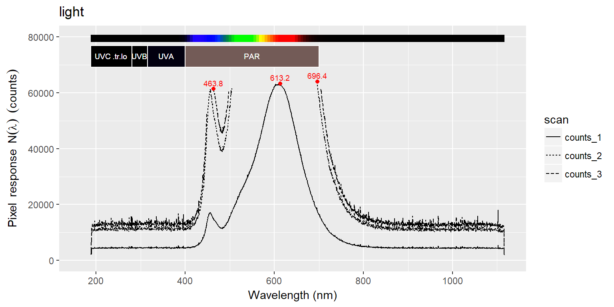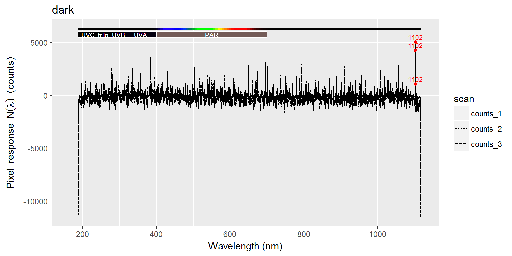
We may next remove an estimate of dark signal based on reference pixels not expected to be excited. This step may apear redundant, but might help in cases when instrument temperature is not stable.
for (m in names(white_LED_2min.raw_mspct)) {
white_LED_2min.raw_mspct[[m]] <-
fshift(white_LED_2min.raw_mspct[[m]], range = c(250,290))
print(plot(white_LED_2min.raw_mspct[[m]]) + ggtitle(m))
}## Warning: Removed 904 rows containing non-finite values (stat_peaks).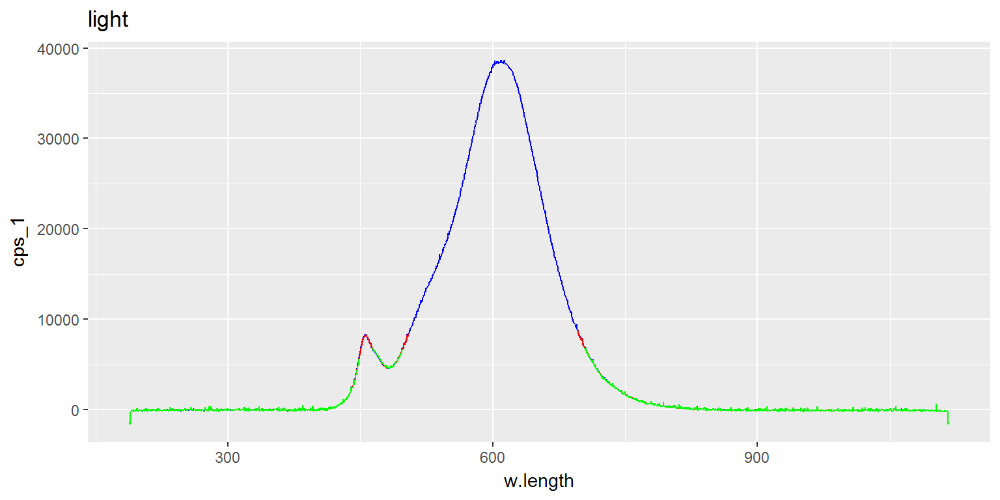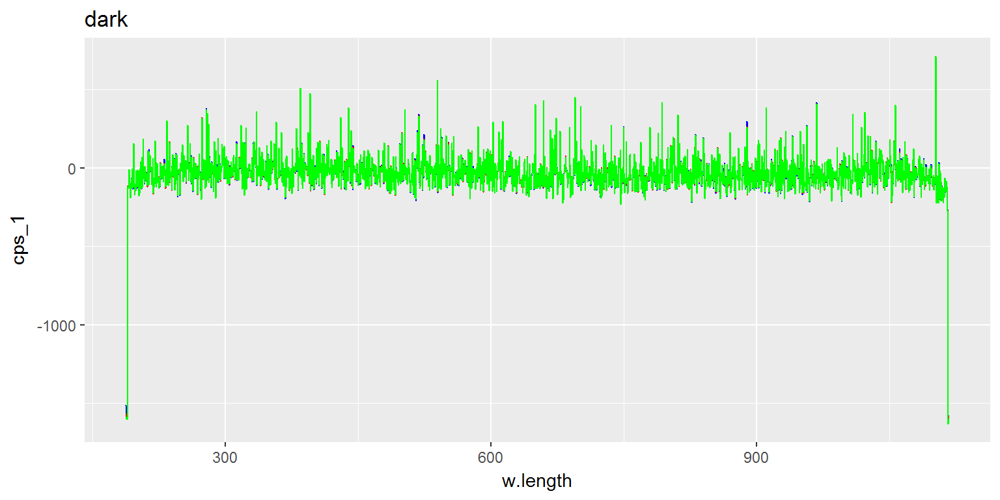
Now we can convert the raw counts into counts per second.
white_LED_2min.cps_mspct <- cps_mspct()
for (m in names(white_LED_2min.raw_mspct)) {
white_LED_2min.cps_mspct[[m]] <-
raw2cps(white_LED_2min.raw_mspct[[m]])
print(
ggplot(white_LED_2min.cps_mspct[[m]], aes(x = w.length)) +
geom_line(aes(y = cps_1), color = "blue") +
geom_line(aes(y = cps_2), color = "red") +
geom_line(aes(y = cps_3), color = "green") +
ggtitle(m)
)
}## Warning in range_check(x, cps.cols): Off-range cps values
## [-1611.57..702.83] instead of [0..1]## Warning in range_check(x, cps.cols): Off-range cps values
## [-1613.97..708.81] instead of [0..1]## Warning in range_check(x, cps.cols): Off-range cps values
## [-1630.93..714.15] instead of [0..1]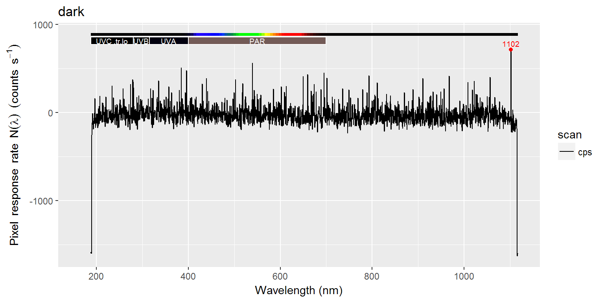
Next splicing of the bracketed integrations.
for (m in names(white_LED_2min.cps_mspct)) {
white_LED_2min.cps_mspct[[m]] <-
merge_cps(white_LED_2min.cps_mspct[[m]])
print(plot(white_LED_2min.cps_mspct[[m]]) + ggtitle(m))
}## Warning in range_check(x, cps.cols): Off-range cps values
## [-1630.93..714.15] instead of [0..1]
## Warning in range_check(x, cps.cols): Off-range cps values
## [-1630.93..714.15] instead of [0..1]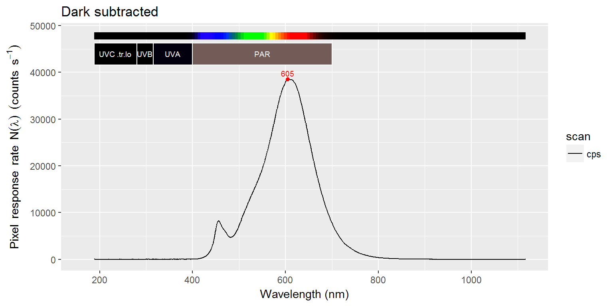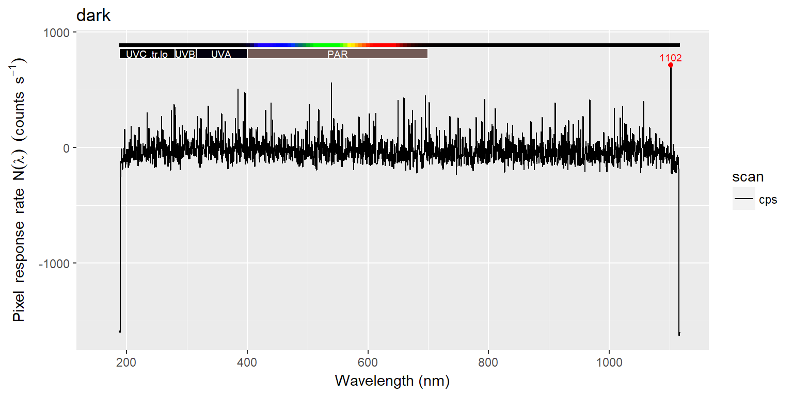
We now subtract the dark signal from the light measurement.
white_LED_2min.cps_spct <-
white_LED_2min.cps_mspct[["light"]] - white_LED_2min.cps_mspct[["dark"]]
white_LED_2min.cps_spct <-
copy_attributes(white_LED_2min.raw_mspct[["light"]],
white_LED_2min.cps_spct,
copy.class = FALSE)
plot(white_LED_2min.cps_spct) + ggtitle("Dark subtracted")white_LED_2min.spct <- cps2irrad(white_LED_2min.cps_spct)
plot(white_LED_2min.spct)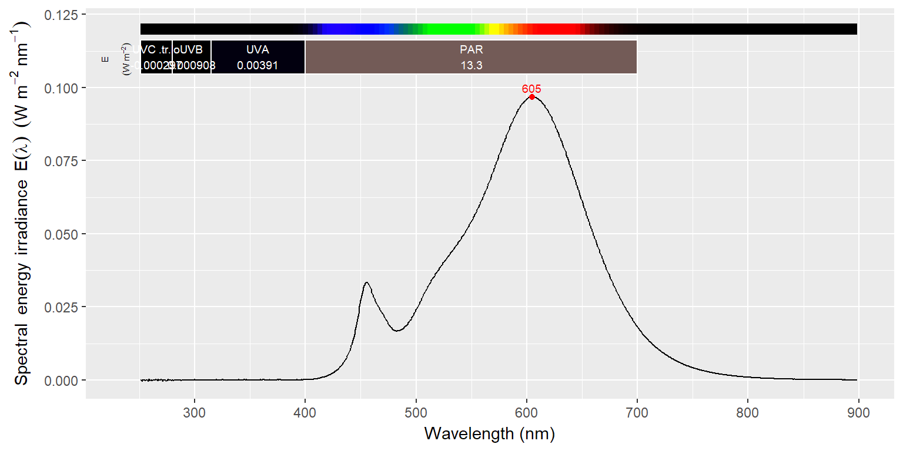
We can finally smooth-out some of the noise.
white_LED_2min.spct <- smooth_spct(white_LED_2min.spct)## Warning in smooth_spct.source_spct(white_LED_2min.spct): 637 'bad'
## estimates in spectral irradianceplot(white_LED_2min.spct)With an LED source, at least in the case of our Maya 2000 Pro, we do not need to worry about stray light. However, when we measure light sources with a significant emission in the infra-red above 1000 nm, stray light becomes a problem. In addition sources with narrow peaks of emission may benefit from deconvolution of a measured slit function.
Tungsten halogen lamp
We calculate irradiance from a set of raw-counts spectral data using a high-level function.
halogen.spct <-
s_irrad_corrected(halogen.raw_mspct, correction.method= MAYP11278_ylianttila.mthd)
plot(halogen.spct)plot(halogen.spct, range = c(250, 410))We print the object with the raw counts data. The protocol used, in this case included a measurement with a UV-pass filter (polycarbonate).
halogen.raw_mspct## Object: raw_mspct [3 x 1]
## --- Member: light ---
## Object: raw_spct [2,068 x 3]
## Wavelength range 187.82 to 1117.14 nm, step 0.41 to 0.48 nm
## Label: Halogen
## Measured on 2017-03-28 11:24:35 UTC
## Data acquired with 'MayaPro2000' s.n. MAYP11278
## grating 'HC1', slit '010s'
## integ. time (s): 1.86, 7.2
## total time (s): 5.58, 7.2
## counts @ peak (% of max): 94.4
##
## # A tibble: 2,068 x 3
## w.length counts_1 counts_2
## <dbl> <dbl> <dbl>
## 1 187.82 2288.333 2285
## 2 188.30 2210.000 2211
## 3 188.78 2182.333 2180
## 4 189.26 2181.667 2184
## 5 189.73 3865.000 8578
## 6 190.21 4119.667 9494
## 7 190.69 4114.000 9675
## 8 191.17 4178.667 9918
## 9 191.64 4310.000 10366
## 10 192.12 4189.667 9875
## # ... with 2,058 more rows
## --- Member: filter ---
## Object: raw_spct [2,068 x 3]
## Wavelength range 187.82 to 1117.14 nm, step 0.41 to 0.48 nm
## Label: Halogen
## Measured on 2017-03-28 11:25:54 UTC
## Data acquired with 'MayaPro2000' s.n. MAYP11278
## grating 'HC1', slit '010s'
## integ. time (s): 1.86, 7.2
## total time (s): 5.58, 7.2
## counts @ peak (% of max): 94.4
##
## # A tibble: 2,068 x 3
## w.length counts_1 counts_2
## <dbl> <dbl> <dbl>
## 1 187.82 2290.333 2290
## 2 188.30 2212.333 2213
## 3 188.78 2183.333 2182
## 4 189.26 2181.333 2186
## 5 189.73 3924.667 8693
## 6 190.21 4178.333 9735
## 7 190.69 4188.333 9861
## 8 191.17 4262.000 10140
## 9 191.64 4397.333 10548
## 10 192.12 4229.333 10135
## # ... with 2,058 more rows
## --- Member: dark ---
## Object: raw_spct [2,068 x 3]
## Wavelength range 187.82 to 1117.14 nm, step 0.41 to 0.48 nm
## Label: Halogen
## Measured on 2017-03-28 11:26:36 UTC
## Data acquired with 'MayaPro2000' s.n. MAYP11278
## grating 'HC1', slit '010s'
## integ. time (s): 1.86, 7.2
## total time (s): 5.58, 7.2
## counts @ peak (% of max): 94.4
##
## # A tibble: 2,068 x 3
## w.length counts_1 counts_2
## <dbl> <dbl> <dbl>
## 1 187.82 2287.667 2290
## 2 188.30 2211.667 2209
## 3 188.78 2182.667 2185
## 4 189.26 2182.667 2183
## 5 189.73 3816.000 8408
## 6 190.21 4053.667 9346
## 7 190.69 4000.333 9231
## 8 191.17 4062.000 9404
## 9 191.64 4179.667 9863
## 10 192.12 4053.000 9350
## # ... with 2,058 more rows
##
## --- END ---We first use a “pipe” to apply the same initial processing steps as for the LED bulb data in the previous section.
halogen.cps_mspct <- cps_mspct()
for (m in names(halogen.raw_mspct)) {
halogen.raw_mspct[[m]] %>%
skip_bad_pixs() %>%
trim_counts() %>%
bleed_nas() %>%
linearize_counts() %>%
fshift(range = c(187.82,189.26)) %>%
raw2cps() %>%
merge_cps() -> halogen.cps_mspct[[m]]
}
halogen.cps_mspct## Object: cps_mspct [3 x 1]
## --- Member: light ---
## Object: cps_spct [2,068 x 2]
## Wavelength range 187.82 to 1117.14 nm, step 0.41 to 0.48 nm
## Label: Halogen
## Measured on 2017-03-28 11:24:35 UTC
## Data acquired with 'MayaPro2000' s.n. MAYP11278
## grating 'HC1', slit '010s'
## integ. time (s): 1.86, 7.2
## total time (s): 5.58, 7.2
## counts @ peak (% of max): 94.4
##
## # A tibble: 2,068 x 2
## w.length cps
## <dbl> <dbl>
## 1 187.82 10.6009359
## 2 188.30 0.3464329
## 3 188.78 -3.9493661
## 4 189.26 -3.3950696
## 5 189.73 884.2018178
## 6 190.21 1011.9826105
## 7 190.69 1037.2621437
## 8 191.17 1071.2176472
## 9 191.64 1133.8706633
## 10 192.12 1065.2076455
## # ... with 2,058 more rows
## --- Member: filter ---
## Object: cps_spct [2,068 x 2]
## Wavelength range 187.82 to 1117.14 nm, step 0.41 to 0.48 nm
## Label: Halogen
## Measured on 2017-03-28 11:25:54 UTC
## Data acquired with 'MayaPro2000' s.n. MAYP11278
## grating 'HC1', slit '010s'
## integ. time (s): 1.86, 7.2
## total time (s): 5.58, 7.2
## counts @ peak (% of max): 94.4
##
## # A tibble: 2,068 x 2
## w.length cps
## <dbl> <dbl>
## 1 187.82 10.9473729
## 2 188.30 0.2771456
## 3 188.78 -4.0186536
## 4 189.26 -3.4643571
## 5 189.73 899.8843479
## 6 190.21 1045.2979871
## 7 190.69 1062.9045973
## 8 191.17 1101.9094513
## 9 191.64 1158.9968896
## 10 192.12 1101.2102082
## # ... with 2,058 more rows
## --- Member: dark ---
## Object: cps_spct [2,068 x 2]
## Wavelength range 187.82 to 1117.14 nm, step 0.41 to 0.48 nm
## Label: Halogen
## Measured on 2017-03-28 11:26:36 UTC
## Data acquired with 'MayaPro2000' s.n. MAYP11278
## grating 'HC1', slit '010s'
## integ. time (s): 1.86, 7.2
## total time (s): 5.58, 7.2
## counts @ peak (% of max): 94.4
##
## # A tibble: 2,068 x 2
## w.length cps
## <dbl> <dbl>
## 1 187.82 11.0628515
## 2 188.30 -0.1616727
## 3 188.78 -3.4874526
## 4 189.26 -3.7646009
## 5 189.73 860.2825093
## 6 190.21 991.0887877
## 7 190.69 975.0378660
## 8 191.17 999.1855825
## 9 191.64 1063.2995879
## 10 192.12 991.6471539
## # ... with 2,058 more rows
##
## --- END ---for (m in names(halogen.cps_mspct)) {
print(plot(halogen.cps_mspct[[m]]) + ggtitle(m))
print(plot(halogen.cps_mspct[[m]], range = c(250, 410)) + ggtitle(m))
}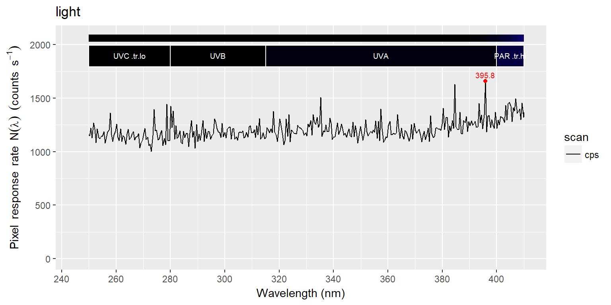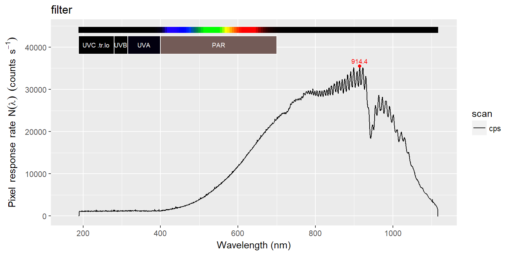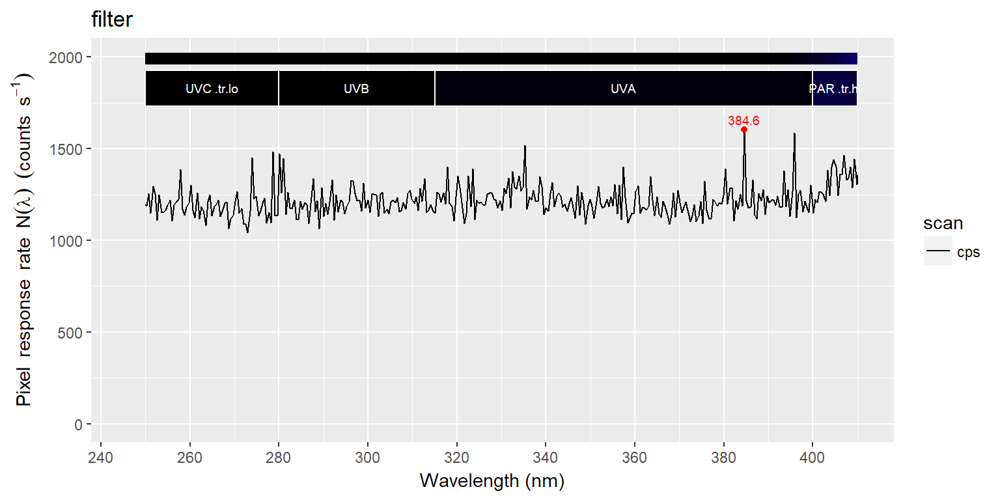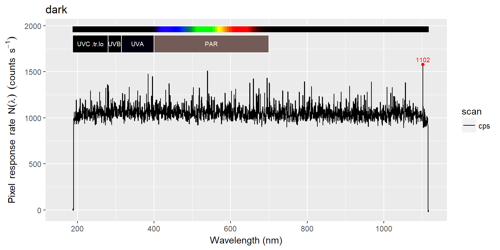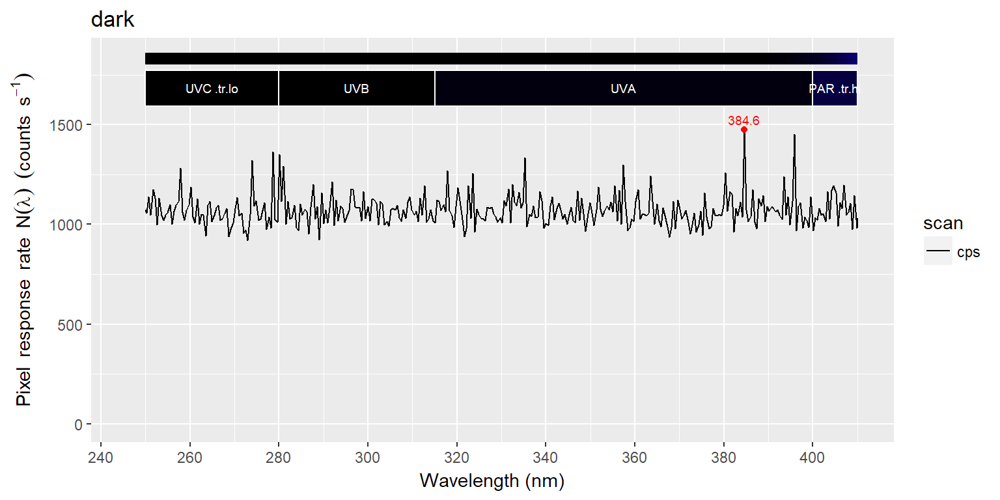
We substract the dark reading from both the light and filter measurements, and copy attributes, including instrument settings and calibration data.
halogen01.cps_mspct <- cps_mspct()
for (m in setdiff(names(halogen.cps_mspct), "dark")) {
halogen01.cps_mspct[[m]] <- halogen.cps_mspct[[m]] - halogen.cps_mspct[["dark"]]
halogen01.cps_mspct[[m]] <-
copy_attributes(halogen.cps_mspct[[m]],
halogen01.cps_mspct[[m]],
copy.class = FALSE)
}
halogen01.cps_mspct## Object: cps_mspct [2 x 1]
## --- Member: light ---
## Object: cps_spct [2,068 x 2]
## Wavelength range 187.82 to 1117.14 nm, step 0.41 to 0.48 nm
## Label: Halogen
## Measured on 2017-03-28 11:24:35 UTC
## Data acquired with 'MayaPro2000' s.n. MAYP11278
## grating 'HC1', slit '010s'
## integ. time (s): 1.86, 7.2
## total time (s): 5.58, 7.2
## counts @ peak (% of max): 94.4
##
## # A tibble: 2,068 x 2
## w.length cps
## <dbl> <dbl>
## 1 187.82 -0.4619156
## 2 188.30 0.5081056
## 3 188.78 -0.4619134
## 4 189.26 0.3695313
## 5 189.73 23.9193085
## 6 190.21 20.8938227
## 7 190.69 62.2242777
## 8 191.17 72.0320647
## 9 191.64 70.5710754
## 10 192.12 73.5604916
## # ... with 2,058 more rows
## --- Member: filter ---
## Object: cps_spct [2,068 x 2]
## Wavelength range 187.82 to 1117.14 nm, step 0.41 to 0.48 nm
## Label: Halogen
## Measured on 2017-03-28 11:25:54 UTC
## Data acquired with 'MayaPro2000' s.n. MAYP11278
## grating 'HC1', slit '010s'
## integ. time (s): 1.86, 7.2
## total time (s): 5.58, 7.2
## counts @ peak (% of max): 94.4
##
## # A tibble: 2,068 x 2
## w.length cps
## <dbl> <dbl>
## 1 187.82 -0.1154786
## 2 188.30 0.4388183
## 3 188.78 -0.5312009
## 4 189.26 0.3002438
## 5 189.73 39.6018386
## 6 190.21 54.2091993
## 7 190.69 87.8667313
## 8 191.17 102.7238688
## 9 191.64 95.6973017
## 10 192.12 109.5630543
## # ... with 2,058 more rows
##
## --- END ---for (m in names(halogen01.cps_mspct)) {
print(plot(halogen01.cps_mspct[[m]]) + ggtitle(m))
print(plot(halogen01.cps_mspct[[m]], range = c(250, 410)) + ggtitle(m))
}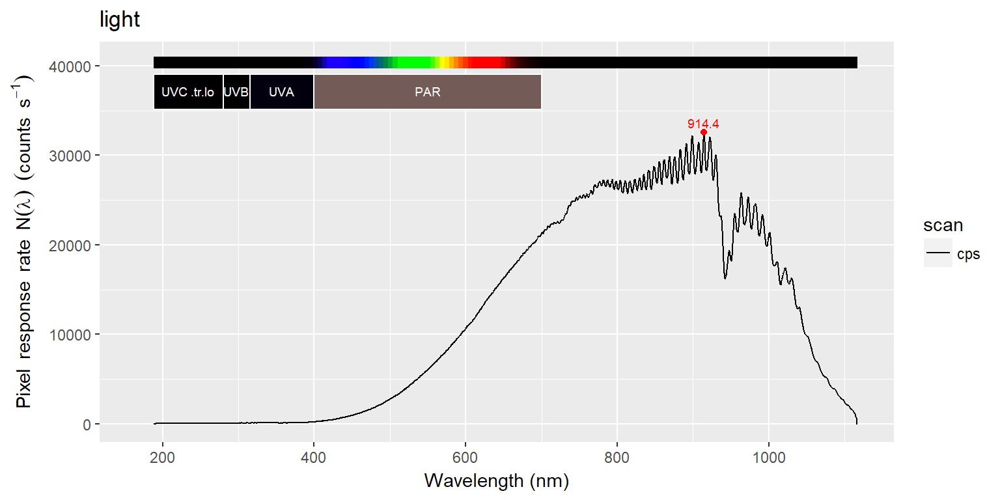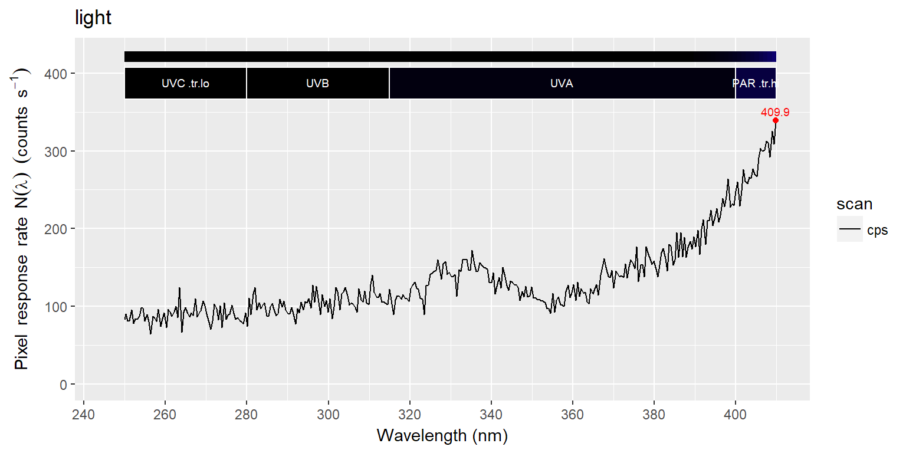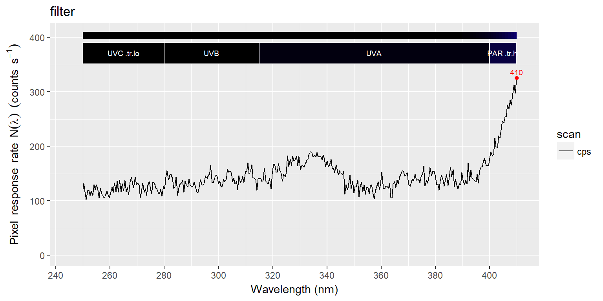
As we can see in the plots above, a small amount of stray light is present in both spectra in the UV region. We apply a filter correction using a simple method based on a fixed transmittance value. By trial an error a flt.Tfr value > 1 gives best correction, which is odd…
halogen_corrected.cps_spct <-
filter_correction(halogen01.cps_mspct[["light"]],
halogen01.cps_mspct[["filter"]],
stray.light.method = "original",
flt.Tfr = 1.4)plot(halogen_corrected.cps_spct)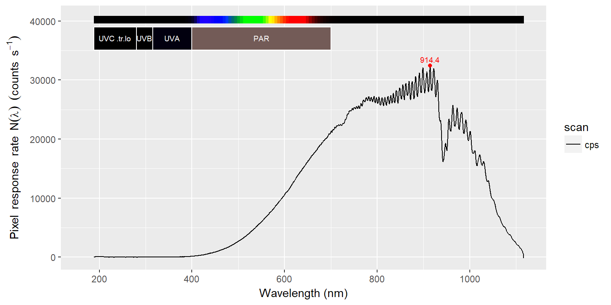
plot(halogen_corrected.cps_spct, range = c(250, 410))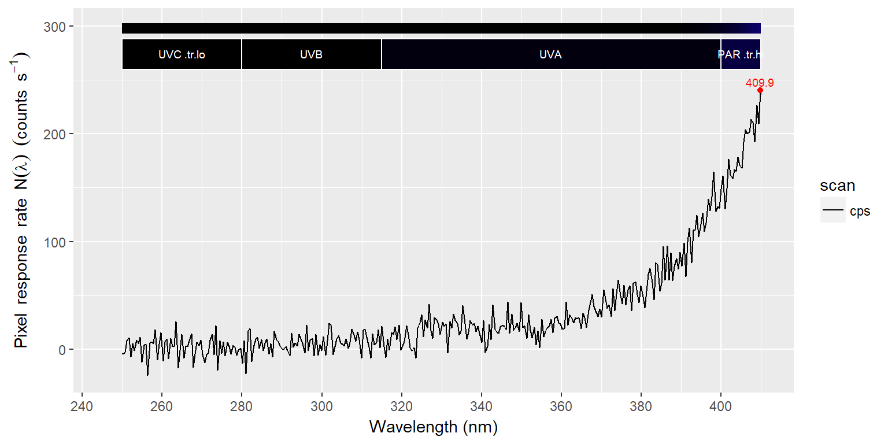
mean(clip_wl(halogen_corrected.cps_spct, range = c(250, 300))[["cps"]])## [1] 2.747068cps2irrad(halogen_corrected.cps_spct) -> halogen.source_spctplot(halogen.source_spct)plot(halogen.source_spct, range = c(250, 410))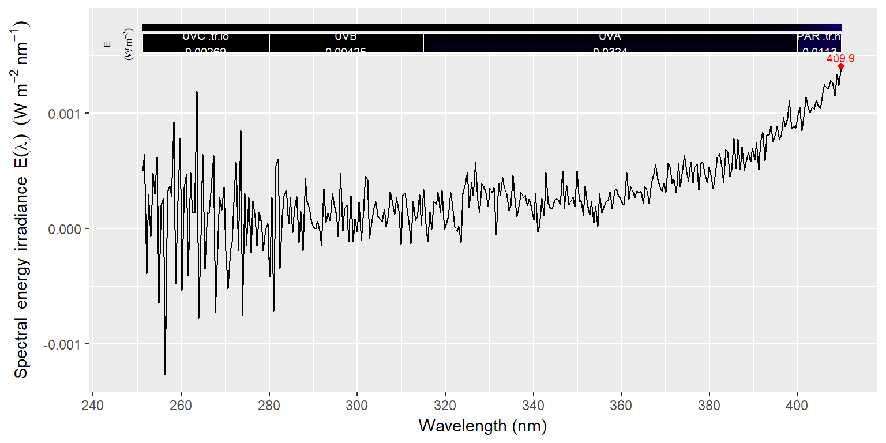
q_ratio(halogen.source_spct, list(UVC(), UVB(), UVA()), PAR()) * 1e3## UVC.ISO.tr.lo: PAR(q:q) UVB.ISO: PAR(q:q) UVA.ISO: PAR(q:q)
## 0.1925562 0.3494061 3.2901570
## attr(,"radiation.unit")
## [1] "q:q ratio"cps2irrad(halogen_corrected.cps_spct) %>%
smooth_spct(method = "supsmu", strength = 3) -> halogen.source_spctplot(halogen.source_spct)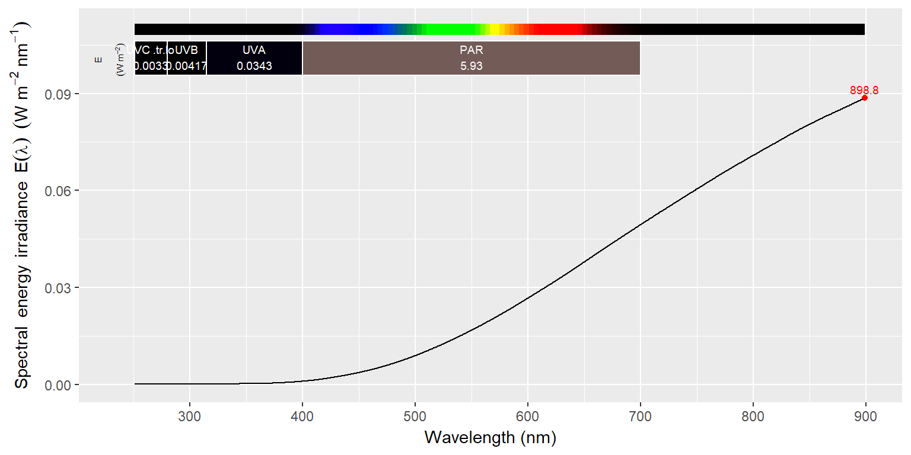
plot(halogen.source_spct, range = c(250, 410))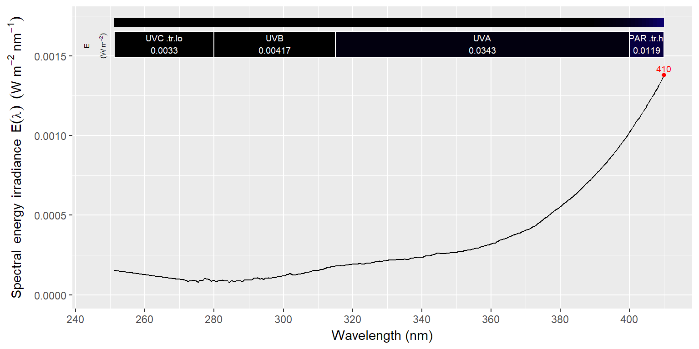
q_ratio(halogen.source_spct, list(UVC(), UVB(), UVA()), PAR()) * 1e3## UVC.ISO.tr.lo: PAR(q:q) UVB.ISO: PAR(q:q) UVA.ISO: PAR(q:q)
## 0.2395183 0.3434062 3.4877545
## attr(,"radiation.unit")
## [1] "q:q ratio"